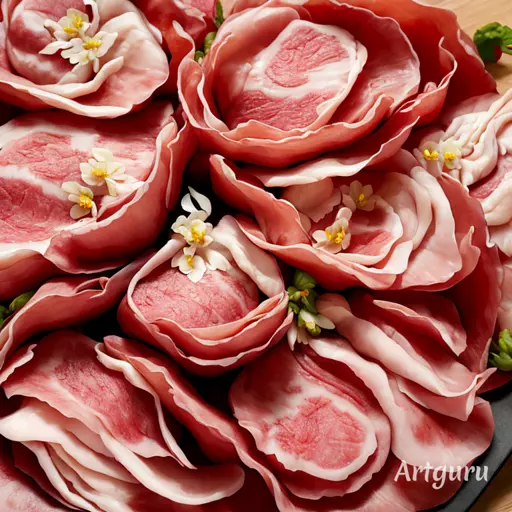

期末實作 學號:91034113 姓名:張簡琇妃
料理陳列展示
五香蹄花肉
準備材料
- 豬蹄花肉 500 克
- 青蔥 2 支（切段）
- 姜片 3 片
- 八角 2 顆
- 桂皮 1 條
- 甘草 1 小片
- 醬油 3 湯匙
- 黑醋 2 湯匙
- 冰糖 2 湯匙
- 料酒 2 湯匙
- 鹽巴 1/2 茶匙
- 水 800 毫升
步驟
- 豬蹄花肉先用開水燙一下，去除血水，撇去浮沫。
- 燒一鍋開水，將燙過的豬蹄花肉放入，過水3分鐘，撇去浮沫，取出備用。
- 另起一鍋，放入姜片、八角、桂皮、甘草，炒香出香味。
- 將焯水過的豬蹄花肉加入炒香的香料中，煮一下，加入醬油、料酒、冰糖，繼續拌炒均勻。
- 將焯水過的豬蹄花肉加入炒香的香料中，煮一下，加入醬油、料酒、冰糖，繼續拌炒均勻。
- 加入水，水量要稍微蓋過豬蹄花肉，再加入鹽，轉小火悶煮 1.5-2 小時，至豬蹄花肉軟爛入味。
- 最後，加入黑醋，繼續悶煮 10 分鐘，使得豬蹄花肉入味，湯汁收濃稠即可。

典故和好處
台灣經典美食－五香豬腳，以五香調味教味蕾玩轉多重風味。濃郁的五香香氣
與豬腳獨有的香濃相結合，單單聞著那香氣就讓人垂涎欲滴。一口咬下，豬肉
融化於口，豐富的膠質瞬間黏附在唇齒之間。這不僅是口感的饗宴，更是一場
原始、天然膠原蛋白的盛宴，讓那美妙滋味難以忘懷。如果你渴望親自體驗這
股唇齒留香的風味，其實自己動手做也一點都不是難事喔！